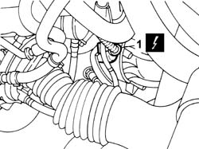
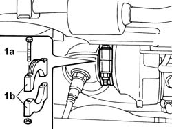
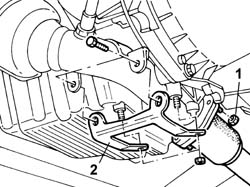
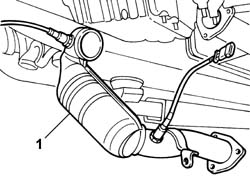

1080B40 CATALYTIC PRECONVERTER - R.R.
- Path
- Procedures > 10 ENGINE > 1080 EMISSION CONTROL SYSTEM > 1080B EXHAUST EMISSION CONTROL SYSTEM > 1080B40 CATALYTIC PRECONVERTER - R.R.
- Kind
- repair procedure (removal / refitting; the operation number is the code)
- Applies to
- engines: 2.0 TB; all production periods
- Interactive page
- https://sloeber94.github.io/elrnDB-lThss/en/#/381468
Applies to: engines: 2.0 TB; all production periods
 Removing
Removing
 Refitting
Refitting- Position the vehicle on a lift.
- Make sure that the ignition key is in the OFF position, then open the boot, remove the cover on the left hand side and disconnect the negative battery lead.
See in Op. 7040D50 ENGINE COMPARTMENT UPPER SOUND INSULATION SHIELD - R.R.
See in Op. 7055B54 PROTECTION/GUARD under engine - R.R.
See in Op. 1072C44 Exhaust manifold heat shield on BULKHEAD - R.R.
See in Op. 1088E10 Radiator cooling FAN - R.R.
See in Op. 1048A10 COMPLETE AIR FILTER -R.R.
See in Op. 1048A50 air inlet pipe to turbocharger - r + r
See in Op. 1048A21 AIR INLET HOSE FROM INTAKE TO FILTER - R.R.
See in Op. 1016A40 Ignition COIL COVER on cylinder head - R.R.
1. Disconnect the electrical connection for the rear Lambda sensor.
 | Description | Connector |
|---|---|---|
1 | Lambda sensor on catalyzer 2 | K018 |

Applies to: engines: 2.0 TB; all production periods
1. Undo the fixing bolts (1a) and remove the two half-rings (1b) between the catalytic preconverter and the turbine.

Applies to: engines: 2.0 TB; all production periods
- Raise the lift.
- Support the catalytic preconverter appropriately.
1. Undo the nuts fixing the catalytic converter to the centre section of the exhaust pipe.
2. Remove the catalytic converter mounting bracket.

Applies to: engines: 2.0 TB; all production periods
1. Remove the catalytic preconverter complete with Lambda sensors.

Applies to: engines: 2.0 TB; all production periods
Refitting
Removing- Position the catalytic preconverter.
- Position the gasket and tighten the nuts fixing the catalytic preconverter to the centre section of the exhaust pipe.
 | Value - daNm | Fastening | Component | Ø |
|---|---|---|---|---|
. | 2.8 | Nut | CATALYTIC PRE-CONVERTER | M8 |
- Fit the catalytic converter mounting bracket.
| Value - daNm | Fastening | Component | Ø |
|---|---|---|---|---|
. | 4 | Nut | CATALYTIC CONVERTER MOUNT | M10 |
| Value - daNm | Fastening | Component | Ø |
|---|---|---|---|---|
. | 2.8 | Bolt | CATALYTIC CONVERTER MOUNT | M8 |
- Lower the lift.
- Fit the half-rings fastening the catalytic preconverter to the turbine and tighten the bolts.
| Value - daNm | Fastening | Component | Ø |
|---|---|---|---|---|
. | 2,8 | Bolt | CATALYTIC PRE-CONVERTER | M8 |
- Connect the electrical connection for the rear Lambda sensor.
| Description | Connector |
|---|---|---|
. | Lambda sensor on catalyzer 2 | K018 |
See in Op. 1072C44 Exhaust manifold heat shield on BULKHEAD - R.R.
See in Op. 1088E10 Radiator cooling FAN - R.R.
See in Op. 1048A10 COMPLETE AIR FILTER -R.R.
See in Op. 1048A50 air inlet pipe to turbocharger - r + r
See in Op. 1048A21 AIR INLET HOSE FROM INTAKE TO FILTER - R.R.
See in Op. 7055B54 PROTECTION/GUARD under engine - R.R.
See in Op. 1016A40 Ignition COIL COVER on cylinder head - R.R.
See in Op. 7040D50 ENGINE COMPARTMENT UPPER SOUND INSULATION SHIELD - R.R.
- Connect the negative battery terminal, then close the boot.
- Remove the vehicle from the lift.
Topics linked from this page (8)
- 1016A40 Ignition COIL COVER on cylinder head - R.R.
- 1048A10 COMPLETE AIR FILTER -R.R.
- 1048A21 AIR INLET HOSE FROM INTAKE TO FILTER - R.R.
- 1048A50 air inlet pipe to turbocharger - r + r
- 1072C44 Exhaust manifold heat shield on BULKHEAD - R.R.
- 1088E10 Radiator cooling FAN - R.R.
- 7040D50 ENGINE COMPARTMENT UPPER SOUND INSULATION SHIELD - R.R.
- 7055B54 PROTECTION/GUARD under engine - R.R.
Topics that link to this page (6)
- 1020A20 CRANKCASE SUMP - R.R. clean contact surfaces and apply sealant
- 1064A19 HOSE CONNECTED to EXHAUST PIPE - R.R.
- 1084B42 Engine oil return pipe to turbocharger
- 1084C10 Engine oil heat exchanger - R.R.
- 1088D47 COOLANT SUPPLY AND RETURN HOSES TO ENGINE OIL HEAT EXCHANGER - R.R.
- 4410D10 Front suspension FRAME - R.R.